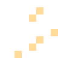
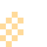
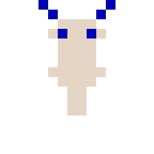

Instruction booklet

1-2 playersNES-compatible cartridge
Long ago the caves under Ember Hill were lit by fireflies. Then the Snuffer Queen climbed up from the deep, and her children ate the light.
The fireflies hid inside the creatures of the dark: in dust bunnies and bats, in wisps and spiders, even in the stones. One by one the caves went black, and the creatures grew to like it that way.
One moth still carries a light. Wherever it flies, a trail of glow follows behind. Draw that trail all the way around a creature and the light inside it stirs: the creature curls into a cocoon, and a firefly comes out.
Free the fireflies of fifteen caves. Wake the Great Owl, outlast the Cave Toad, and find the Queen who swallowed the light.

Free every firefly in a cave and it lights up from wall to wall.
Insert the cartridge and switch the console on. On the title screen, choose 1 player or 2 players and press Start. Player 2 uses the second controller.
| Button | In the cave |
|---|---|
| Left Right | Drift left and right |
| A or B | Flap upward. Hold it to keep flapping. |
| Start | Pause and resume (either controller) |
| Up Down Select | Choose 1 or 2 players |
| Start | Begin |
The top line shows each player's score, lives (the heart) and the letters of any power-ups they hold. The clock in the middle counts down the seconds left in the cave. Under 10 seconds it ticks and blinks.
Fly. Your moth leaves a trail of glowing dots behind it. The trail fades after a few seconds, so keep moving.
2Loop. Bring your moth back across its own trail, all the way around a creature. Everything inside the loop turns into a cocoon. A loop around a ledge catches whatever walks on it.
3Collect. Each cocoon hatches a firefly. Fly into it before it gets away: a firefly left alone for about 7 seconds wakes back up as the creature it came from.

A loop around a whole ledge catches the creature walking on it.
Touching a creature costs a life. You start with 3 and can hold up to 9. Each cave gives you 60 seconds. Time you don't use carries into the next cave, plus another 60 (up to 99). If the clock runs out, everyone still playing loses a life and the cave starts again.
Most creatures are deadly to touch, and each one pauses at some point. That pause is your moment to loop it.

Walks its ledge. Loop the whole ledge.

Flees your light at speed, then flies home to doze. Loop it while it sleeps, and don't fly closer than you need to.

Walks its ledge and eats your trail, breaking the loop. Go wide and be quick.

Looks like rock until your light touches it, then chases along its ledge for 3 seconds. Loop it while it sleeps.

Flits from place to place and hovers. Harmless, but its touch steals your light for 4 seconds.

Drops on its thread, hangs, then climbs back. Its webs slow you down. Loop it at the bottom of its drop.
Every fifth cave is a boss. A boss can't be looped itself: loop the glowing thing it sends out. Each hit is 1000 points, and beating a boss gives 5000 to every player still in.

Cave 5, 4 hits. When it wakes, a moon orb drifts from its chest and hovers around the hall. Loop the orb while it hovers. Feathers fall while the owl is awake.

Cave 10, 6 hits. Blows bubbles that rise and hover. Loop them, two at once for two hits. Never fly over its mouth: the tongue is fast.

Cave 15, 8 hits. Embers drift from the sacs on her shell. Loop them while her larvae, snuffer beetles that eat trails, hatch on the ledges. At half health she sends two embers at once.
With two players, a moth that's caught becomes a pale spirit that drifts away from danger. The other moth touches it to bring it back, safe for 2 seconds. If no moth is left flying, the cave starts again. A loop made from both moths' trails counts: its fireflies are worth double, and it drops a team power-up in the middle.
A power-up appears about 12 seconds into each cave and stays for 10. It lasts until you lose a life.

Speed: a faster top speed

Control: sharper steering, finer hovering

Tail: a trail half as long again
Heart: one extra life
| For | Points |
|---|---|
| Fireflies from one loop: 1st, 2nd, 3rd, 4th | 100, 200, 400, 800 |
| Fireflies from a team loop | double |
| A power-up | 500 |
| Each second left when a cave is cleared | 50 |
| A boss hit / beating a boss | 1000 / 5000 |
Game by Tony Mamacos. Written in 6502 assembly with the cc65 tools for NROM-256 hardware: 32 KB of program, 8 KB of graphics, no extra chips.
© 2026 Tony Mamacos. Lantern Moth is independent homebrew software for NES-compatible consoles and emulators. It is not affiliated with or endorsed by Nintendo.
